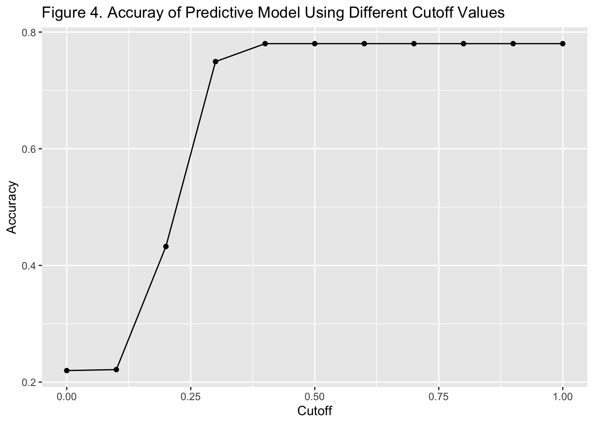

Cervical cancer is the third most common cancer among females worldwide with estimated 569,847 new cases and 311,365 deaths in 2018.(1) The prevalence of cervical cancer varies across the world and the burden of cervical cancer is disproportionally placed on low and middle income countries. Uganda, the country located in East Africa, has one of the heaviest burdens of cervical cancer in the world with nearly twice the global average incidence rate.(2) Human papillomavirus (HPV) vaccines are considered a primary cost-effective prevention for cervical cancer especially among young girls but the vaccine coverage remains low. In Uganda, the 2-dose HPV vaccine series are included as part of the routine National Expanded Program on Immunization in 2015.(3)
Previous research has identified multiple factors that are associated with HPV vaccine uptake including older age, health insurance coverage, healthcare utilization, information from healthcare providers, prior vaccination history. Some factors, such as race, income, education and socioeconomic status are reported to have mixed effects. (4,5)
In this project, the data from the household member recode of the 2016 Uganda Demographic and Health Survey data was used and it includes a comprehensive set of variables on individual and family level demographic and health related information.(4) With this dataset, this project aims to identify factors associated with HPV vaccine uptake among girls aged 10-14 and develop a consequent predicative algorithm.
To confirm the feasibility of the study, several exploratory data analysis were conducted to explore the heterogeneity between eligible girls who received HPV vaccine versus those who did not in certain characteristics. Data visualizations were generated to investigate the distribution of potential associated factors among the population and their relationship with HPV vaccine uptake in simple form. Figure 1 and Figure 2 (see Appendix) showed the variations in wealth index across different regions in Uganda, both of which might be associated with HPV vaccine uptakes and the differential proportions of eligible girls who have received HPV vaccine by age and by region. These preliminary analysis indicated the potential existence of multiple variables that are associated with outcome of interest.
As the outcome is defined as a binary measure of having received HPV vaccine or not, and there are a number of factors that are potentially informative, logistic regression incorporating multiple variables was the primary analysis. In correspondence to the logistic regression, a machine learning model was developed and evaluated using the logistic regression.
Because the primary aim of this project is to identify factors associated with HPV vaccine uptake, which is coded as a binary outcome in the dataset, multivariate logistic regression was used as the main analysis and summary statistics on all variables included in the model, stratified by vaccination status is shown in Table 1. Included girls who received HPV vaccines were different from girls who did not in many characteristics and most significantly in terms of education, region and wealth index that their family belong to. In general, girls who received HPV vaccine were older, more likely to come from Northern region, less likely to have no education, have mother in the household and come from relatively wealthier families. A correlation matrix was produced between continuous variables, or categorical variables that can be reasonably assumed as continuous (Figure 3). Between any two variable among number of household member, education, age and wealth index, no clear strong correlation was observed and the highest correlation was between education level and wealth index. As correlations can only measure linear relationship and fit the best for continuous variables, the absence of strong correlation can not rule out the possibility of associations. In addition, the correlation matrix did not show evidence of co-linearity between individual variables in potential regression model.
The results from the logistic regression model was summarized in Table 2. Older age, coming from the Northern region, having receiving primary education and being in or above the middle wealth index were all associated with higher odds of receiving HPV vaccines (p<0.05). Being in a family with over 9 family members is possibly associated with lower odds of getting HPV vaccines while having a female household head slightly elevated the odds of getting vaccinated. In addition to the full model described before, another model with simplified variable list was applied as well. All variables that showed significant association results (p<0.05) were retained in the model, similar to a backward elimination approach and the results were in general in line with the previous model. For both models, it’s worth noticing that all the coefficients estimated from the models were quite small except for intercept, which is not practically meaningful to interpret in this case and for having received higher education, which is not a usual scenario for girls of this age and has a consequently problematic sample size. The small coefficients corresponded to limited magnitude in real effect size, which might indicated little individual prediction power if included in the prediction algorithm.
In line with the multivariate logistic regression that was used to identify factors associated with HPV vaccine uptake, a generalized linear model using binomial distribution, equivalent to logistic regression was used to conduct basic machine learning. The dataset was randomly divided into a training set and a test and all variables incorporated into the fully model was used as individual predictors in the algorithm. Because the outcome was defined as a binary outcome, the direct output from the model was the probability of receiving HPV vaccines and a threshold was needed to change it into dichotomous outputs, identical to the observe outcomes. The threshold was decided by trying out different cutoff values and the corresponding model accuracy were illustrated in Figure 4 and Table 5 respectively. The optimal cutoff value given by this methods is 0.4 which generated an accuracy of around 0.78. This was not a satisfying overall performance in terms of accuracy and further detailed performance were summarized in Table 6 where using both the optimal threshold 0.4 and the second best threshold 0.3 were applied in the algorithm. With the optimal threshold of 0.4, the model achieved the highest accuracy and a precision/specificity of 0 while with the cutoff value of 0.3, we regained some specificity. This was related with the low prevalence of HPV vaccine uptake in the underlying population and this model was still under powered to provide useful insights.
In general, the logistic regression analysis was relatively successfully but it needs to be recognized that the significant p-value does not necessarily translate into practical implications as magnitude of the effect sizes were small. The prediction model had a moderately overall performance but had several problems. The underlying population was from the real world so the prevalence of the outcome was highly unbalance where the majority of included participants were not vaccinated. This implies that by predicting no vaccination for everyone, it would still correctly predict the majority, which is what happened in the model. If more time were given, models that are more complicated than generalized models could be applied and other technique such as smoothing or additional pre-processing could be included. In addition, the sampling scheme of the of training versus test set could be change with regard to the ratio of vaccinated and non-vaccinated individuals.
In conclusion, this project identified several factors that were associated with HPV vaccine uptake among girls aged 10-14 in Uganda, including age, region, education attainment, family wealth, the role of mother in the household. However, these effect size were relatively small indicating absence of strong predictive power. This was also shown in the prediction model based on logistic regression. Although the overall accuracy of the model was acceptable, the predictions were not truly informative. Future research should explore a wide range of variables such as healthcare utilization, community characteristic and health education and adopts more advance technique to improve prediction.
Table 1. Baseline characteristics
| No (N=4754) |
Yes (N=1339) |
Total (N=6093) |
|
|---|---|---|---|
| Age | |||
| Mean (SD) | 11.8 (1.41) | 11.9 (1.40) | 11.9 (1.41) |
| Median [Min, Max] | 12.0 [10.0, 14.0] | 12.0 [10.0, 14.0] | 12.0 [10.0, 14.0] |
| Region | |||
| Central | 680 (14.3%) | 174 (13.0%) | 854 (14.0%) |
| Eastern | 1439 (30.3%) | 420 (31.4%) | 1859 (30.5%) |
| Kampala | 166 (3.5%) | 37 (2.8%) | 203 (3.3%) |
| Northern | 1281 (26.9%) | 400 (29.9%) | 1681 (27.6%) |
| Western | 1188 (25.0%) | 308 (23.0%) | 1496 (24.6%) |
| Residence | |||
| Urban | 820 (17.2%) | 220 (16.4%) | 1040 (17.1%) |
| Rural | 3934 (82.8%) | 1119 (83.6%) | 5053 (82.9%) |
| Education | |||
| No school | 545 (11.5%) | 98 (7.3%) | 643 (10.6%) |
| Primary | 4072 (85.7%) | 1206 (90.1%) | 5278 (86.6%) |
| Secondary | 132 (2.8%) | 35 (2.6%) | 167 (2.7%) |
| Higher | 5 (0.1%) | 0 (0%) | 5 (0.1%) |
| Sex of Household Head | |||
| Male | 3186 (67.0%) | 871 (65.0%) | 4057 (66.6%) |
| Female | 1568 (33.0%) | 468 (35.0%) | 2036 (33.4%) |
| Number of Household Members | |||
| <=5 | 1323 (27.8%) | 374 (27.9%) | 1697 (27.9%) |
| 6-7 | 1522 (32.0%) | 468 (35.0%) | 1990 (32.7%) |
| 8-9 | 1123 (23.6%) | 305 (22.8%) | 1428 (23.4%) |
| >9 | 786 (16.5%) | 192 (14.3%) | 978 (16.1%) |
| Mother in the Household | |||
| No | 1625 (34.2%) | 411 (30.7%) | 2036 (33.4%) |
| Yes | 3129 (65.8%) | 928 (69.3%) | 4057 (66.6%) |
| Wealth Index | |||
| Lowest | 1196 (25.2%) | 320 (23.9%) | 1516 (24.9%) |
| Second | 985 (20.7%) | 258 (19.3%) | 1243 (20.4%) |
| Middle | 984 (20.7%) | 306 (22.9%) | 1290 (21.2%) |
| Fourth | 915 (19.2%) | 265 (19.8%) | 1180 (19.4%) |
| Highest | 674 (14.2%) | 190 (14.2%) | 864 (14.2%) |
Table 2. Regression Results from the Full Model
| Characteristic | OR1 | 95% CI1 | p-value |
|---|---|---|---|
| Age | 1.07 | 1.02, 1.12 | 0.004 |
| Region | |||
| Central | — | — | |
| Eastern | 1.20 | 0.98, 1.48 | 0.078 |
| Kampala | 0.85 | 0.55, 1.29 | 0.4 |
| Northern | 1.49 | 1.19, 1.87 | <0.001 |
| Western | 1.03 | 0.83, 1.27 | 0.8 |
| Residence | |||
| Urban | — | — | |
| Rural | 1.06 | 0.87, 1.29 | 0.6 |
| Education | |||
| No school | — | — | |
| Primary | 1.75 | 1.39, 2.23 | <0.001 |
| Secondary | 1.46 | 0.92, 2.28 | 0.10 |
| Higher | 0.00 | >0.9 | |
| Number of Household Members | |||
| <=5 | — | — | |
| 6-7 | 1.05 | 0.90, 1.24 | 0.5 |
| 8-9 | 0.91 | 0.76, 1.09 | 0.3 |
| >9 | 0.82 | 0.66, 1.00 | 0.051 |
| Sex of Household Head | |||
| Male | — | — | |
| Female | 1.13 | 0.99, 1.29 | 0.078 |
| Wealth Index | |||
| Lowest | — | — | |
| Second | 1.04 | 0.86, 1.27 | 0.7 |
| Middle | 1.31 | 1.07, 1.60 | 0.009 |
| Fourth | 1.26 | 1.02, 1.55 | 0.033 |
| Highest | 1.37 | 1.06, 1.77 | 0.016 |
| Mother in the Household | |||
| No | — | — | |
| Yes | 1.22 | 1.06, 1.39 | 0.005 |
| 1 OR = Odds Ratio, CI = Confidence Interval | |||
Table 3. Regression Results from the simplified Model
| Characteristic | OR1 | 95% CI1 | p-value |
|---|---|---|---|
| Age | 1.06 | 1.02, 1.11 | 0.006 |
| Region | |||
| Central | — | — | |
| Eastern | 1.18 | 0.97, 1.46 | 0.11 |
| Kampala | 0.85 | 0.55, 1.27 | 0.4 |
| Northern | 1.47 | 1.18, 1.84 | <0.001 |
| Western | 1.04 | 0.84, 1.28 | 0.7 |
| Education | |||
| No school | — | — | |
| Primary | 1.72 | 1.37, 2.19 | <0.001 |
| Secondary | 1.46 | 0.92, 2.27 | 0.10 |
| Higher | 0.00 | >0.9 | |
| Wealth Index | |||
| Lowest | — | — | |
| Second | 1.02 | 0.83, 1.24 | 0.9 |
| Middle | 1.26 | 1.03, 1.54 | 0.023 |
| Fourth | 1.20 | 0.98, 1.48 | 0.082 |
| Highest | 1.29 | 1.01, 1.64 | 0.037 |
| Mother in the Household | |||
| No | — | — | |
| Yes | 1.19 | 1.05, 1.37 | 0.009 |
| 1 OR = Odds Ratio, CI = Confidence Interval | |||
 Table 5. Model Accuracy Using Different Cutoff Values
## cutoff accuracy
## 1 0.0 0.2198523
## 2 0.1 0.2214930
## 3 0.2 0.4325267
## 4 0.3 0.7493847
## 5 0.4 0.7801477
## 6 0.5 0.7801477
## 7 0.6 0.7801477
## 8 0.7 0.7801477
## 9 0.8 0.7801477
## 10 0.9 0.7801477
## 11 1.0 0.7801477Table 6. Detailed Model Performances
## cutoff_df accuracy_df sensitivity_df specificity_df
## 1 0.3 0.7600657 0.9526316 0.07490637
## 2 0.4 0.7806081 1.0000000 0.00000000All Code for this project:
knitr::opts_chunk$set(echo = TRUE)
library(haven)
hpv <- read_dta("UGPR7BFL.DTA")
library(tidyverse)
library(dplyr)
library(ggplot2)
library(ggridges)
library(boot)
library(table1)
library(ggcorrplot)
library(caret)
library(gtsummary)
hpv_girl_10_14 <- hpv |>
filter(hv105 >= 10 & hv105 <=14 & hv104 ==2) |> #6528 left
filter(sh22 == 0 | sh22 == 1) |> #6093 left
select(sh22, hv105, hv024, hv025, hv122, hv219, hv112, hv009, hv270)
#rename variables
hpv_girl_10_14 <- hpv_girl_10_14 |> rename(hpv_vaccine = sh22,
age = hv105,
region = hv024,
residence = hv025,
education = hv122,
household_head_sex = hv219,
live_with_mother_in_household = hv112,
household_member_number = hv009,
wealth_index = hv270)
correlation <- hpv_girl_10_14 |> select(age, education, household_member_number, wealth_index)
#recode
#hpv vaccine
hpv_girl_10_14$hpv_vaccine <- factor(hpv_girl_10_14$hpv_vaccine, levels = c(0,1), labels = c("No", "Yes"))
label(hpv_girl_10_14$hpv_vaccine) <- "HPV Vaccine"
#age
hpv_girl_10_14$age <- as.numeric(hpv_girl_10_14$age)
label(hpv_girl_10_14$age) <- "Age"
#region
hpv_girl_10_14 <- hpv_girl_10_14 |> mutate(region_cat = case_when(
region == 0 ~ "Kampala",
region %in% c(7, 8, 9, 10) ~ "Northern",
region %in% c(3, 4, 5, 6) ~ "Eastern",
region %in% c(11, 12, 13, 14) ~ "Western",
region %in% c(1, 2) ~ "Central"
))
hpv_girl_10_14$region_cat <- as.factor(hpv_girl_10_14$region_cat)
label(hpv_girl_10_14$region_cat) <- "Region"
#residence
hpv_girl_10_14$residence <- factor(hpv_girl_10_14$residence, levels = c(1,2), labels = c("Urban","Rural"))
label(hpv_girl_10_14$residence) <- "Residence"
#education
hpv_girl_10_14 <- hpv_girl_10_14 |> filter(education %in% c(0,1,2,3))
hpv_girl_10_14$education_cat <- factor(hpv_girl_10_14$education, levels = c(0,1,2,3), labels = c("No school", "Primary", "Secondary", "Higher"))
label(hpv_girl_10_14$education_cat) <- "Education"
#household sex
hpv_girl_10_14$household_head_sex <- factor(hpv_girl_10_14$household_head_sex, levels = c(1,2), labels = c("Male", "Female"))
label(hpv_girl_10_14$household_head_sex) <- "Sex of Household Head"
#living with mother
hpv_girl_10_14 <- hpv_girl_10_14 |> mutate(live_with_mother_in_household_cat = case_when(
live_with_mother_in_household > 0 ~ "Yes",
live_with_mother_in_household == 0 ~ "No"
))
hpv_girl_10_14$live_with_mother_in_household_cat <- as.factor(hpv_girl_10_14$live_with_mother_in_household_cat)
label(hpv_girl_10_14$live_with_mother_in_household_cat) <- "Mother in the Household"
#household member number
hpv_girl_10_14$household_member_number <- as.numeric(hpv_girl_10_14$household_member_number)
quantile(hpv_girl_10_14$household_member_number, probs = c(0,0.25,0.5,0.75,1))
hpv_girl_10_14 <- hpv_girl_10_14 |> mutate(household_member_number_cat = case_when(
household_member_number <= 5 ~ 1,
household_member_number %in% c(6, 7) ~ 2,
household_member_number %in% c(8, 9) ~ 3,
household_member_number > 9 ~ 4
))
hpv_girl_10_14$household_member_number_cat <- factor(hpv_girl_10_14$household_member_number_cat, levels = c(1,2,3,4), labels = c("<=5","6-7","8-9", ">9"))
label(hpv_girl_10_14$household_member_number_cat) <- "Number of Household Members"
#Wealth Index
hpv_girl_10_14$wealth_index <- factor(hpv_girl_10_14$wealth_index, levels = c(1,2,3,4,5), labels = c("Lowest", "Second", "Middle", "Fourth", "Highest"))
label(hpv_girl_10_14$wealth_index) <- "Wealth Index"
#Figure 1
hpv_girl_10_14 |>
ggplot(aes(as.numeric(wealth_index), region_cat)) +
geom_density_ridges(bandwidth = 1.5) +
xlab("Wealth Index") +
ylab("Region") +
ggtitle("Figure 1. Distribution of Wealth Index across Regions")
#Figure 2
figure2 <- hpv_girl_10_14 |> group_by(age, region_cat, hpv_vaccine) |> summarize(count=n()) |> as.data.frame()
figure2 |> ggplot(aes(x = age, y = count, fill = hpv_vaccine)) +
geom_bar(position = "stack", stat = "identity") +
facet_grid(. ~ region_cat) +
scale_fill_discrete(name = "HPV Vaccine", labels = c("No", "Yes")) +
xlab("Age") +
ylab("Count") +
ggtitle("Figure 2. Proportions of HPV Vaccine Uptakes by Age and Regions")
#Table 1 - Baseline characteristics
table1(~ age + region_cat + residence + education_cat + household_head_sex + household_member_number_cat + live_with_mother_in_household_cat + wealth_index | hpv_vaccine, data=hpv_girl_10_14, overall = "Total")
library(ggcorrplot)
model.matrix(~0+., data=correlation) |> cor(use = "pairwise.complete.obs") |> ggcorrplot(show.diag = F, type = "lower", lab = TRUE, lab_size = 2) + ggtitle("Figure 3. Correlation Matrix")
#Table 2 - regression results full model
model_logistic <- glm(hpv_vaccine ~ age + region_cat + residence + education_cat + household_member_number_cat + household_head_sex + wealth_index + live_with_mother_in_household_cat, family = "binomial", data = hpv_girl_10_14)
summary(model_logistic)
tbl_regression(model_logistic, exponentiate = TRUE)
#Table 3 - regression results simplified model
model_logistic_2 <- glm(hpv_vaccine ~ age + region_cat + education_cat + wealth_index + live_with_mother_in_household_cat, family = "binomial", data = hpv_girl_10_14)
summary(model_logistic_2)
tbl_regression(model_logistic_2, exponentiate = TRUE)
#turn into a ML dataset
set.seed(2604)
hpv_girl_10_14 <- hpv_girl_10_14[complete.cases(hpv_girl_10_14),]
y <- hpv_girl_10_14$hpv_vaccine
test_index <- createDataPartition(y, times = 1, p = 0.8, list = FALSE)
train_set <- hpv_girl_10_14 |> slice(test_index)
test_set <- hpv_girl_10_14 |> slice(-test_index)
#fit logistic regression
fit_glm <- glm(hpv_vaccine ~ age + region_cat + residence + education_cat + live_with_mother_in_household_cat + household_member_number_cat + wealth_index, data = train_set, family = "binomial")
p_hat_glm <- predict(fit_glm, test_set, type = "response")
#Evaluation Matrix
cutoff <- seq(0, 1, 0.1)
accuracy <- map_dbl(cutoff, function(x){
y_hat <- ifelse(p_hat_glm > x, "Yes", "No") |>
factor(levels = levels(test_set$hpv_vaccine))
mean(y_hat == train_set$hpv_vaccine)
})
#Figure 4.
data.frame(cutoff, accuracy) |>
ggplot(aes(cutoff, accuracy)) +
geom_point() +
geom_line() +
xlab("Cutoff") +
ylab("Accuracy") +
ggtitle("Figure 4. Accuray of Predictive Model Using Different Cutoff Values")
#Table 5. Model Accuracy Using Different Cutoff Values
print(data.frame(cutoff, accuracy))
#Table 6. Model Performance
y_hat_glm <-factor(ifelse(p_hat_glm > 0.4, "Yes", "No"))
confusionMatrix(y_hat_glm, test_set$hpv_vaccine)$overall["Accuracy"]
sensitivity(data = y_hat_glm, reference = test_set$hpv_vaccine)
specificity(data = y_hat_glm, reference = test_set$hpv_vaccine)
table(predicted = y_hat_glm, actual = test_set$hpv_vaccine)
y_hat_glm_2 <-factor(ifelse(p_hat_glm > 0.3, "Yes", "No"))
confusionMatrix(y_hat_glm_2, test_set$hpv_vaccine)$overall["Accuracy"]
sensitivity(data = y_hat_glm_2, reference = test_set$hpv_vaccine)
specificity(data = y_hat_glm_2, reference = test_set$hpv_vaccine)
table(predicted = y_hat_glm_2, actual = test_set$hpv_vaccine)
cutoff_df <- c(0.3, 0.4)
accuracy_df <- c(0.7600657, 0.7806081)
sensitivity_df <-c(0.9526316, 1)
specificity_df <-c(0.07490637, 0)
print(data.frame(cutoff_df, accuracy_df, sensitivity_df,specificity_df))
library(tidyverse)
hpv_girl_10_14 <- hpv |>
filter(hv105 >= 10 & hv105 <=14 & hv104 ==2) |> #6528 left
filter(sh22 == 0 | sh22 == 1) |> #6093 left
select(sh22, hv105, hv024, hv025, hv122, hv219, hv112, hv009, hv270)
#rename variables
library(dplyr)
hpv_girl_10_14 <- hpv_girl_10_14 |> rename(hpv_vaccine = sh22,
age = hv105,
region = hv024,
residence = hv025,
education = hv122,
household_head_sex = hv219,
live_with_mother_in_household = hv112,
household_member_number = hv009,
wealth_index = hv270)
correlation <- hpv_girl_10_14 |> select(age, education, household_member_number, wealth_index)
label(correlation$age) <- "Age"
label(correlation$education) <- "Education"
label(correlation$household_member_number) <- "Number of Household Member"
label(correlation$wealth_index) <- "Wealth Index"
#recode
#hpv vaccine
hpv_girl_10_14$hpv_vaccine <- factor(hpv_girl_10_14$hpv_vaccine, levels = c(0,1), labels = c("No", "Yes"))
label(hpv_girl_10_14$hpv_vaccine) <- "HPV Vaccine"
#age
hpv_girl_10_14$age <- as.numeric(hpv_girl_10_14$age)
label(hpv_girl_10_14$age) <- "Age"
#region
hpv_girl_10_14 <- hpv_girl_10_14 |> mutate(region_cat = case_when(
region == 0 ~ "Kampala",
region %in% c(7, 8, 9, 10) ~ "Northern",
region %in% c(3, 4, 5, 6) ~ "Eastern",
region %in% c(11, 12, 13, 14) ~ "Western",
region %in% c(1, 2) ~ "Central"
))
hpv_girl_10_14$region_cat <- as.factor(hpv_girl_10_14$region_cat)
label(hpv_girl_10_14$region_cat) <- "Region"
#residence
hpv_girl_10_14$residence <- factor(hpv_girl_10_14$residence, levels = c(1,2), labels = c("Urban","Rural"))
label(hpv_girl_10_14$residence) <- "Residence"
#education
hpv_girl_10_14 <- hpv_girl_10_14 |> filter(education %in% c(0,1,2,3))
hpv_girl_10_14$education_cat <- factor(hpv_girl_10_14$education, levels = c(0,1,2,3), labels = c("No school", "Primary", "Secondary", "Higher"))
label(hpv_girl_10_14$education_cat) <- "Education"
#household sex
hpv_girl_10_14$household_head_sex <- factor(hpv_girl_10_14$household_head_sex, levels = c(1,2), labels = c("Male", "Female"))
label(hpv_girl_10_14$household_head_sex) <- "Sex of Household Head"
#living with mother
hpv_girl_10_14 <- hpv_girl_10_14 |> mutate(live_with_mother_in_household_cat = case_when(
live_with_mother_in_household > 0 ~ "Yes",
live_with_mother_in_household == 0 ~ "No"
))
hpv_girl_10_14$live_with_mother_in_household_cat <- as.factor(hpv_girl_10_14$live_with_mother_in_household_cat)
label(hpv_girl_10_14$live_with_mother_in_household_cat) <- "Mother in the Household"
#household member number
hpv_girl_10_14$household_member_number <- as.numeric(hpv_girl_10_14$household_member_number)
quantile(hpv_girl_10_14$household_member_number, probs = c(0,0.25,0.5,0.75,1))
hpv_girl_10_14 <- hpv_girl_10_14 |> mutate(household_member_number_cat = case_when(
household_member_number <= 5 ~ 1,
household_member_number %in% c(6, 7) ~ 2,
household_member_number %in% c(8, 9) ~ 3,
household_member_number > 9 ~ 4
))
hpv_girl_10_14$household_member_number_cat <- factor(hpv_girl_10_14$household_member_number_cat, levels = c(1,2,3,4), labels = c("<=5","6-7","8-9", ">9"))
label(hpv_girl_10_14$household_member_number_cat) <- "Number of Household Members"
#Wealth Index
hpv_girl_10_14$wealth_index <- factor(hpv_girl_10_14$wealth_index, levels = c(1,2,3,4,5), labels = c("Lowest", "Second", "Middle", "Fourth", "Highest"))
label(hpv_girl_10_14$wealth_index) <- "Wealth Index"
#ggplot
library(ggplot2)
library(ggridges)
#Figure 1
hpv_girl_10_14 |>
ggplot(aes(as.numeric(wealth_index), region_cat)) +
geom_density_ridges(bandwidth = 1.5) +
xlab("Wealth Index") +
ylab("Region") +
ggtitle("Figure 1. Distribution of Wealth Index across Regions")
#Figure 2
figure2 <- hpv_girl_10_14 |> group_by(age, region_cat, hpv_vaccine) |> summarize(count=n()) |> as.data.frame()
figure2 |> ggplot(aes(x = age, y = count, fill = hpv_vaccine)) +
geom_bar(position = "stack", stat = "identity") +
facet_grid(. ~ region_cat) +
scale_fill_discrete(name = "HPV Vaccine", labels = c("No", "Yes")) +
xlab("Age") +
ylab("Count") +
ggtitle("Figure 2. Proportions of HPV Vaccine Uptakes by Age and Regions")
#Table 1 - Baseline characteristics
library(boot)
library(table1)
table1(~ age + region_cat + residence + education_cat + household_head_sex + household_member_number_cat + live_with_mother_in_household_cat + wealth_index | hpv_vaccine, data=hpv_girl_10_14, overall = "Total")
#Figure 3 - Correlation matrix
library(ggcorrplot)
model.matrix(~0+., data=correlation) |> cor(use = "pairwise.complete.obs") |> ggcorrplot(show.diag = F, type = "lower", lab = TRUE, lab_size = 2) + ggtitle("Figure 3. Correlation Matrix of Selected Continuous Variable")
#logistic regression
#Table 2 - regression results full model
model_logistic <- glm(hpv_vaccine ~ age + region_cat + residence + education_cat + household_member_number_cat + household_head_sex + wealth_index + live_with_mother_in_household_cat, family = "binomial", data = hpv_girl_10_14)
summary(model_logistic)
#Table 3 - regression results simplified model
model_logistic_2 <- glm(hpv_vaccine ~ age + region_cat + education_cat + wealth_index + live_with_mother_in_household_cat, family = "binomial", data = hpv_girl_10_14)
summary(model_logistic_2)
#turn into a ML dataset
library(caret)
set.seed(2604)
hpv_girl_10_14 <- hpv_girl_10_14[complete.cases(hpv_girl_10_14),]
y <- hpv_girl_10_14$hpv_vaccine
test_index <- createDataPartition(y, times = 1, p = 0.8, list = FALSE)
train_set <- hpv_girl_10_14 |> slice(test_index)
test_set <- hpv_girl_10_14 |> slice(-test_index)
#fit logistic regression
fit_glm <- glm(hpv_vaccine ~ age + region_cat + residence + education_cat + live_with_mother_in_household_cat + household_member_number_cat + wealth_index, data = train_set, family = "binomial")
p_hat_glm <- predict(fit_glm, test_set, type = "response")
#Evaluation Matrix
cutoff <- seq(0, 1, 0.1)
accuracy <- map_dbl(cutoff, function(x){
y_hat <- ifelse(p_hat_glm > x, "Yes", "No") |>
factor(levels = levels(test_set$hpv_vaccine))
mean(y_hat == train_set$hpv_vaccine)
})
#Figure 4.
data.frame(cutoff, accuracy) |>
ggplot(aes(cutoff, accuracy)) +
geom_point() +
geom_line() +
xlab("Cutoff") +
ylab("Accuracy") +
ggtitle("Figure 4. Accuray of Predictive Model Using Different Cutoff Values")
max(accuracy)
best_cutoff <- cutoff[which.max(accuracy)]
best_cutoff
#Table 5. Model Accuracy of Different Cutoff Values
print(data.frame(cutoff, accuracy))
#Table 6. Model Performance
y_hat_glm <-factor(ifelse(p_hat_glm > 0.4, "Yes", "No"))
confusionMatrix(y_hat_glm, test_set$hpv_vaccine)$overall["Accuracy"]
sensitivity(data = y_hat_glm, reference = test_set$hpv_vaccine)
specificity(data = y_hat_glm, reference = test_set$hpv_vaccine)
table(predicted = y_hat_glm, actual = test_set$hpv_vaccine)
y_hat_glm_2 <-factor(ifelse(p_hat_glm > 0.3, "Yes", "No"))
confusionMatrix(y_hat_glm_2, test_set$hpv_vaccine)$overall["Accuracy"]
sensitivity(data = y_hat_glm_2, reference = test_set$hpv_vaccine)
specificity(data = y_hat_glm_2, reference = test_set$hpv_vaccine)
table(predicted = y_hat_glm_2, actual = test_set$hpv_vaccine)
cutoff_df <- c(0.3, 0.4)
accuracy_df <- c(0.7600657, 0.7806081)
sensitivity_df <-c(0.9526316, 1)
specificity_df <-c(0.07490637, 0)
print(data.frame(cutoff_df, accuracy_df, sensitivity_df,specificity_df))